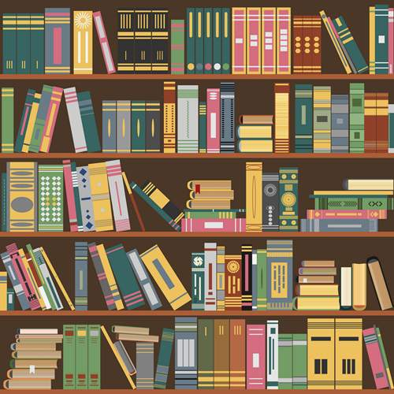

در دنیای امروز و باتوجه به اتفاقاتی که در سال های اخیر افتاده است سرانه مطالعه کتاب دربسیاری از کشورها پایین آمده است.اماهمه ما می دانیم که مطاالعه وکتاب خواندن یکی ازمهم ترین کارهایی است که باید در طول روز انجام دهیم وکتاب خواندن اهمیت زیادی دارد.
این صفحه برای علاقه مندان کتاب تهیه شده است .مادر اینجا لیستی از انواع کتاب ها ومعرفی برخی از آنها می پردازیم.پس تا انتها باماهمراه باشید.
شناسنامه کتاب
درحالت کلی هر کتاب دارای یک صفحه خاص تحت عنوان شناسنامه کتاب می باشد که به این صفحه، "صفحه حقوقی " هم گفته می شود.این صفحه دربردارنده اطلاعاتی مانند نام کتاب،مولف،ویراستار،مترجم(درصورت ترجمه بودن کتاب)،چاپخانه،تعدانسخه چاپ شده،تعدادنوبت،تاریخ چاپ ،(isbn)شابک نیز در این صفحه نوشته می شود.
انواع کتاب ها
- رمان ها
- کتاب های روانشناسی،فلسفی
- کتاب های علمی،تخیلی
- کتاب های درسی
- کتاب های معمایی،ماجراجویی
- کتاب های داستان
- کتاب های مذهبی
- کتاب های ادبی تاریخی
معرفی کتاب ها
- معرفی رمان ها
- یکی از بهترین و محبوب ترین انواع کتاب هایی است که درجهان وجود دارد و نزدیک به۲۰۰سال است که نویسندگان بسیار زیادی تلاش می کنند تا با نوشتن رمان های زیبا و ماندگار نام خود را در تاریخ بزرگترین نویسندگان جهان حک کنند رمان یکی از انواع کتاب است که درآن داستانی نسبتا کوتاه،ویا بسیار بلندوطولانی را دنبال می کنیم وباقراردادن خودمان درنقش کاراکترها به دنیای دیگری میرو یم.
- معرفی کتاب روانشناسی
- یکی از حوزه هایی که درچندسال اخیرطرفداران بسیار زیادی پیدا کرده است وسالانه میلیون ها یا میلیارد ها نفر این دسته از کتب ها را خریداری می کنند ومیخوانند،کتاب های روانشناسیهستند. کتاب های روانشناسی به کتاب هایی گفته میشود که بصورت یک کتاب خود یار نوشته شده اند.شما می توانید با مطالعه کتاب های روانشناسی با برخی از عجیب ترین و رایج ترین ضعف های روحی خود آشنا شویدو همچنین راه درمان آنها را بیاموزید.
- معرفی کتاب های تاریخی
- دربسیاری از جوامع وفرهنگ های مختلف به تاریخ اهمیت بسیار خاصی داده می شود. دانستن تاریخ به ماکمک میکند تا بتوانیم از اشتباهات نیاکان خود باخبر شویم و اشتباهات گذشتگان را تکرار نکنیم.برای شروع مطالعه کتاب های تاریخی تفاوتی ندارد که انگیزه شما شنیدن داستان های گذشته باشد یا دریافت مفهوم تحلیلی آن.به هرحال اگر تا به حال سراغ کتاب های تاریخی نرفته ایدباخواندن انها به شکل هیجان انگیزی تحت تاثیر قرار می گیریدوخواهید دید که مطالعه تاریخ از روی انتخاب مناسب کتاب چقدرمیتواند برایتان جذاب باشد.
- معرفی کتاب های ادبی
- خواندن کتاب های ادبی وادبیات گذشته یکی از کارهایی است که باید انجام دهید.کتاب ادبیات بویژه مطالعه ادبیات فارسی از دسته مطالبی است که حتما باید در زندگی خود آنها را مطالعه کنید.چندین نوع کتاب ادبی مختلف داریم که هرکدام در کشورهای مختلف طرفداران زیادی دارنداین دسته از کتاب های ادبی عبارتند از:
| ادبیات | |||
| انواع کتب ادبی | پیشنهادات | ||
| ادبیات حماسی | شاهنامه | هفت لشکر | پیشنهاد می شود |
| ادبیات غنایی | پنج گنج نظامی | ||
| ادبیات نمایشی | عمارت تالی | رانندگی برای خانم دیزی | پیشنهاد نمی شود |
| ادبیات تراژدی | رومئو و ژولیت | ||
کتابخوانی درمدارایستگاه مطالعه
در دنیای رقابتی امروزبرای برای عقب نماندن از قافله پیشرفت وتوسعه ،کشورها یا باید توان اقتصادی بالایی داشته باشند و یا سرمایه های فکری خویش رادست مایه پیشرفت وتوسعه خود سازند
بنظرمی رسداقتصاد دانش محوردرکشورهای جهان سوم ودرحال توسعه وجود داردپدیده فقرمطالعاتی است که تهدید بزرگی برای کشورهابه شمار می آید.ایرانیان باوجود سابقه درخشان ودیرینه فرهنگی وهمچنین تاکید دین مبین اسلام برمطالعه،کمتراز این حد انتظار به این امر می پردازند.تاکنون طرح های مختلفی ازسوی نهاد فرهنگی برای افزایش جذب افرادبه کتابخوانی صورت گرفته است.تااگر مردم رغبتی به کتابخانه ندارند حداقل برنامه ای پیاده شود کتاب وکتابخانه در بین مردم راه پیداکند.
| نام کتابخانه | آدرس |
|---|---|
| کتابخانه علی ابن امام محمد باقر | کاشان،فین بزرگ،خ.پهلوان |
| کتابخانه آیت الله صبوری | کاشان،باباولی،خ.فرهنگ بیست وسوم |
| کتابخانه مرکزی | کاشان،جانبازان،خ حکمت پنجاه ویکم |
| کتابخانه ابوالرضا | ،کاشان،میدان کهنه |
کتاب هایی که حتما باید بخوانید
پیشنهاد انواع کتاب های خوب
شمانبایدوقت خود را صرف خواندن موضوع هایی کنیدکه شاید روزی برای شما جالب باشد;چون ممکن است آن روز هیچ وقت فرا نرسد.برایان تریسی
پیشنهاد یک کتاب که بتواند شخصی را سرگرم کندیا حتی در مراحل بعد شخص بتواند از آن چیزی یاد بگیرد یکی از کارهایی است که انجام دادن آن از لذت بسیار بالایی برخوردار است وهمه ما دوست داریم تا کتاب هایی را که می شناسیم به بقیه دوستانمان معرفی کنیم
معرفی کتاب در برنامه های تلویزیونی
برنامه های بسیاری درتلویزیون ایران وجود دارد که در آنها به معرفی کتاب می پردازند.ومورد تحلیل و بررسی قرار میگیرند.برخی ازبرنامه هایی که به کتاب وکتابخوانی مربوط می شوند عبارتند از:
- کتاب باز(شبکه نسیم)
- پاتوق کتاب(شبکه سلامت)
- کتاب ودیگرهیچ(شبکه افق)
- تماشای کتاب(شبکه آموزش)
کتاب باز(برنامه تلویزیونی):
کتاب باز برنامه ای تلویزیونی است که از سال 1395 باهدف ترویج و گسترش فرهنگ کتابخوانی از شبکه نسیم پخش شده است.این برنامه تاکنون درچهار فصل به روی آنتن رفته است وفصل پنج آن نیز شهریور1399 نمایش داده شد.درهرقسمت برنامه کتا بهایی توسط کارشناسان ومیهمانان معرفی می شوند. درج معادله فارسی کلمات بیگانه که درحین صحبت مجری ومیهمانان استفاده می شود،نیز از دیگر ویژگی های برنامه کتاب باز است.
فواید کتابخوانی
اگر شما جزو افراد بی شماری هستید که عادت به کتاب خواندن به صورت منظم ندارند ممکن است مزایای زیادی را از دست بدهید
کتابخوانی تاثیر فراوانی بر سلامت جسم وروح افراد دارد آخرین باری که کتابی مطالعه کرده اید چه زمانی بوده است؟ممکن است مانند بسیاری افراد مطالعات روزانه شما پیرامون توییتر،فیسبوک واینستاگرام و... باشد.
همانگونه که بیان شدکتاب خواندن مزایای زیادی دارد که در اینجا به برخی از آنها اشاره می کنیم:
تحریک ذهنی وکتابخوانی
کاهش استرس
افزایش دانش
مهارت های نوشتاری بهتر با کتابخوانی
کتابخوانی وکسب آرامش
مطالعات نشان داده است که تحریک ذهنی می تواند مانع پیشرفت آلزایمر و زوال عقل شود،زیرا فعال نگه داشتن مغز مانع از دست دادن قدرت ذهن می شود.
همچنین مشخص شده است که حل معما و بازی های فکری مانند شطرنج در تحریک ذهن مفید است.
یک رمان خوب می تواندافکارشمارا از حوزه های ناراحت کننده به حوزه های دیگر منتقل کند.وباعث حواس پرتی شما شود.دراین شرایط ذهن شما در لحظه اکنون باقی مانده است وباعث می شود تنش ها تخلیه وبه شما آرامش می دهد.
هر آنچه که مطالعه می کنید ذهن شمارا پر از اطلاعات مفید کرده و شماهرگز نمی دانید این اطلاعات به چه درد می خورد.هرچه دانش بیشتری داشته باشیدبرای مقابله با هر چالشی که با آن روبرو می شوید،عکس اعمل بهتری خواهید داشت.
دراثر مطالعه کتاب ،همزمان باگسترش دایره واژگان مهارت های نوشتاری نیزتقویت می گردد.زیرافرد خواننده باسبک نویسنده های مختلف آشنا می گردد،واین موضوع بر سبک نوشتاری او اثر خواهد گذاشت.
علاوه بر آرامشی که با خواندن یک کتاب خوب همراه است،ممکن است موضوعی که درباره آن خوانده اید آرامش درونی بی نظیری درون شما ایجاد کند.درحالیکه نشان داده شده است خواندن کتاب های خودباوری به افرادی که از برخی اختلالات خلقی وبیماری های خفیف روانی رنج می برند کمک می کند.
انتقاد و سوالات خودرابه ایمیل ادمین بفرستید.
چنانچه از مطالب خوشتان آمد مسئله زیر را حل کنید:)
2x2+4x3+3x2=0